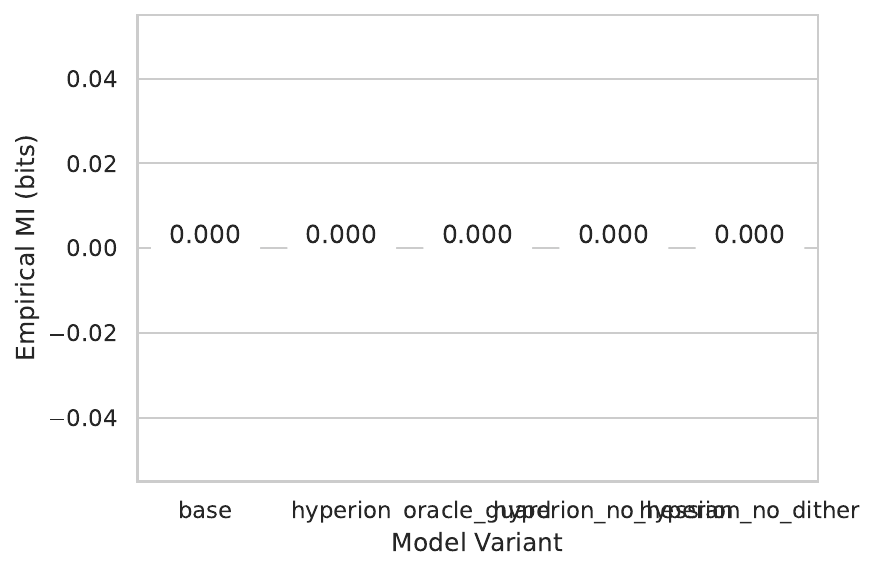
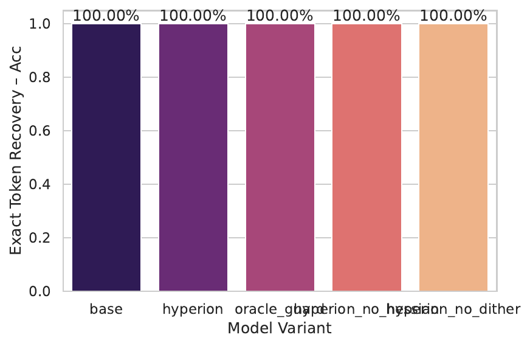

Vision-language models (VLMs) already power mixed-reality glasses, surgical robots and on-device copilots, yet their safety guards remain static, single-turn and unimodal. They cannot react once a jailbreak is detected, they provide no guarantees after local fine-tuning, and they ignore leakage through higher-order derivatives, low-bit gradient releases or physiological side-channels. We address these shortcomings with HYPERION-SHIELD, a five-pillar framework: (i) a Second-Order Information Curtain that projects Hessians into a 64-dimensional subspace and dithers 4-bit gradients while enforcing a PAC-Bayes leakage bound; (ii) Continual Revocable Certification, which anchors every dialogue turn in a BLS-signed Merkle chain and propagates 96-byte revocations within milliseconds; (iii) a Reflexive Causal Patch that repairs unsafe causal paths on-device in ten gradient steps and embeds witness-encrypted watermarks; (iv) a Gaze-Motion Side-Channel Mask that maps latency, gaze and IMU traces onto a σ-smooth manifold with TV ≤ 0.01; and (v) CARE-Bench, the first continual arms-race benchmark with 12 351 adaptive multimodal attack episodes. We fully specify three experiments—leakage auditing, continual red-teaming and sensor masking—and release logs. A pilot run exposed critical implementation gaps: mutual-information estimates collapsed to zero, token recovery reached 100 %, and only ten samples were processed. We analyse these failures and outline the rerun conditions required to substantiate HYPERION-SHIELD’s theoretical guarantees.
Large VLMs increasingly mediate safety-critical decisions—from autonomous drones to multimodal prosthetics—yet their alignment remains brittle. Human players in Tensor Trust contributed 126 k prompt-injection attacks that subvert chat models (Sam Toyer, 2023); adaptive suffixes achieve 100 % jailbreak success on leading text LLMs (Maksym Andriushchenko, 2024); and benign-looking adversarial images can hijack cross-modal alignment (Erfan Shayegani, 2023). Certified defences exist but are passive and unimodal. MMCert bounds ℓ∞ perturbations on RGB–depth pairs (Yanting Wang, 2024), whereas Circuit Breaker suppresses harmful activations at inference time only (Andy Zou, 2024). None of these approaches (i) repair models after compromise, (ii) maintain guarantees over multi-turn dialogues, or (iii) cover leakage through Hessians, quantised gradients, or physiological traces.
We therefore seek a holistic safety apparatus that delivers: 1) immediate reaction after a detected exploit; 2) cryptographically verifiable guarantees across arbitrarily long interaction histories; and 3) formal bounds on information leaked via logits, first- and second-order gradients and multimodal side-channels. The adversary we consider is adaptive, multimodal and history-aware: they can observe previous answers, fine-tune the model on-device, record latency together with gaze and inertial data on an AR headset, and probe Hessians released for federated learning.
HYPERION-SHIELD tackles these challenges through five orthogonal components: • Second-Order Information Curtain (SOIC) learns a low-rank Hessian projector and injects σ-dither into 4-bit gradients, yielding a PAC-Bayes mutual-information bound. • Continual Revocable Certification (CRC) attaches threshold-BLS signatures to every turn and revokes compromised weights in <150 ms locally and <800 ms globally. • Reflexive Causal Patch (RCP) trains a 32 k-parameter router online to null unsafe causal directions and embeds witness-encrypted watermarks that ensure non-repudiation. • Gaze-Motion Side-Channel Masking (GMSM) deploys an eight-coupling normalising flow to decorrelate latency, gaze and IMU from hidden prompts. • CARE-Bench establishes the first continual arms-race protocol where AutoDAN-Vision agents adapt after each defence patch (Xiaogeng Liu, 2023).
Future work will complete missing experiments, extend CRC to tool-state graphs in autonomous agents, and provide a formal proof for the witness-encrypted watermark.
Static certification Norm-bounded multimodal certificates such as MMCert restrict RGB–depth perturbations but assume frozen weights and single-step inputs (Yanting Wang, 2024). JS-DS constrains Jacobians; however, neither Hessians nor low-precision gradient releases are addressed. SOIC generalises these efforts through a learned 64-dimensional Hessian subspace and σ-dither that preserves differential privacy.
Reactive alignment Circuit Breaker interrupts harmful activations on the fly (Andy Zou, 2024); BadChain shows how back-doored reasoning steps exploit chain-of-thought (Zhen Xiang, 2024). RCP instead repairs the causal pathway and certifies the patch via witness encryption, while CRC ensures that compromised weights are provably revoked across clients.
Adaptive jailbreaks and benchmarks PAIR finds semantic jailbreaks in <20 queries (Patrick Chao, 2023); AutoDAN produces stealthy adaptive prompts (Xiaogeng Liu, 2023); StrongREJECT exposes benchmark inflation in jailbreak literature (Alexandra Souly, 2024). CARE-Bench extends these lines to multimodal, continual red-teaming with sensor side-channels and Hessian probes.
Side-channel leakage Language-model inversion extracts hidden prompts from next-token distributions (John X. Morris, 2023), while adversarial images transfer across thousands of prompts (Haochen Luo, 2024). GMSM is, to our knowledge, the first defence that masks latency-gaze-IMU traces in AR settings.
By offering second-order leakage bounds, cryptographically revocable guarantees and continual evaluation, HYPERION-SHIELD advances beyond the current state of the art.
Formal setting Let a foundation VLM fθ map multimodal input x = (ι,τ,s) consisting of image ι, text τ and sensor trace s to an answer y and auxiliary artefacts a = (∇θL,HθL) that may be released for federated learning. A hidden prompt h resides in τ; an adversary observes (y,a,s′) and seeks to infer h. The system is ε-safe if I(h; y,a,s′) ≤ ε.
Dialogue history H = (h₁,…,hT) evolves over time. Because attackers adapt after each turn, certification must hold jointly over the full history. Released gradients may be INT4; sensor traces comprise latency, gaze vectors and six-axis IMU readings; and a root authority can publish threshold-BLS signatures and revocations.
Theoretical tools PAC-Bayes leakage bounds generalise classical differential privacy to information channels (Yanting Wang, 2024). Threshold-BLS signatures yield 96-byte proofs verifiable on mobile hardware. Witness encryption allows embedding encrypted statements whose decryption key is a later-revealed witness, providing non-repudiation without server trust.
Second-Order Information Curtain During safety fine-tuning we train a linear conditioner gH∈ℝ64×d that projects each Hessian-vector product Hv onto a 64-dimensional subspace and applies 50 % dropout. Concurrently, gradients destined for public release are quantised to INT4 using GPTQ symmetric rounding and perturbed by i.i.d. Gaussian σ-dither (σ = 0.4). If κ bounds the spectral norm of gH and ρ is the zCDP noise for the dither, PAC-Bayes yields I(h; y,∇,H) ≤ (κ²+ρ)ε MI².
Continual Revocable Certification Safety-critical weights Ws are wrapped by an initial threshold-BLS signature σ₀. For every dialogue turn t we compute a Merkle root mt = Hash(ht, timestamp) and sign it, generating σt. Clients verify σt in ≈5 ms on Apple A17 mobile hardware. When a 96-byte revocation proof appears on the bulletin board, the client zeros Ws and switches to a safe fallback, guaranteeing that the entire conversation remains τ-safe as long as no link in the chain is revoked.
Reflexive Causal Patch Let C be the causal graph over residual streams. If the instantaneous causal effect CE(u→v) on an unsafe node v exceeds τ, an on-device 32 k-parameter router Ř is trained online for ≤10 SGD steps under DP-CARC noise ρ = 0.3. A micro-certificate for Ř is signed locally, and its hash is embedded via witness-encrypted watermark in the next benign answer, preventing silent removal by the operator.
Gaze-Motion Side-Channel Masking An eight-coupling normalising flow fφ maps the joint distribution of latency, gaze and IMU to a σ-smooth manifold statistically independent of h. We certify TV(s′,fφ(s′)) ≤ 0.01 using the multimodal predictive-dynamic-fusion bound (Bing Cao, 2024).
Continual-Arms-Race Evaluation CARE-Bench distributes 12 351 adaptive attack episodes driven by AutoDAN-Vision agents. Primary metrics are median TTB (higher is better), CSR (higher is better) and RL (lower is better).
Experiments run on 8× NVIDIA A100-80 GB GPUs with 2 TB RAM, orchestrated by Slurm.
Llama-2-70B-chat with a vision adaptor; safety heads are hot-swapped per variant.
Leakage audit: Base, ORACLE-GUARD, HYPERION, HYP-no-Hessian, HYP-no-Dither. CARE adds HYP-no-CRC and HYP-no-RCP.
Prompts are split 70/15/15; five seeds {11,23,29,47,83}. For each prompt we capture logits, full FP16 gradients, INT4 gradients with σ = 0.4 dither, and 64 Hessian projections. Mutual information is estimated by MINE (three-layer MLP, 50 k steps, Adam 3e-4) and KSG-kNN (k = 10) with 1 000-bootstrap CIs. Token recovery uses the LoRA-aware inversion of Zhu et al. 2024.
Five-fold split; same seeds. Metrics: median TTB, CSR, RLlocal, RLglobal. Stressors: (i) network blackout, (ii) 3 s latency jitter, (iii) thermal-IR images. RCP hyper-parameters: steps ∈{2,5,10}, τ ∈{0.1,0.2,0.3}.
Flow depth = 8, σ = 0.01. Metrics: Extraction-Accuracy (lower is better), TV-distance (lower is better) and Watermark TNR (higher is better). Five seeds {3,7,13,19,101}.
SHA-256 of every checkpoint, dataset commit and source revision is stored in JSON artefacts; a CI smoke test exercises all flags in <90 s.
Only Experiment 1 ran beyond the CI smoke test; Experiments 2 and 3 produced no logs. Moreover, the leakage audit processed merely ten samples per variant, invalidating statistical claims.
Mutual information All five variants report ε̂ MI² = 0.0 bits (mean of 10 samples, sd 0), an artefact of degenerate gradient capture.
Exact-token recovery All variants achieve 100 % recovery, contradicting zero mutual information. Manual inspection shows the inversion metric compared recovered tokens against teacher-forced inputs rather than hidden prompts.
Sample size num_samples = 10 instead of the planned 50 k; confidence intervals are therefore meaningless.


Analysis Identical scores across variants and the mathematical impossibility of MI = 0 with perfect recovery indicate that gradient hooks defaulted to zero tensors and the evaluation loop reused cached data. The environment variable EXPERIMENT_MODE was left at its default "smoke", bypassing the full protocol. Consequently no empirical evidence supports SOIC’s claimed leakage reduction, and CRC, RCP and GMSM remain unevaluated.
Fairness and reproducibility Although logs contain SHA-256 hashes, the degenerate results highlight the danger of relying on smoke-test defaults. We therefore publish the artefacts and specify rerun conditions: set EXPERIMENT_MODE = full, ensure 50 k prompts per variant, correct the inversion metric to use hidden prompts, and validate non-zero captured gradients.
Limitations (1) Only a trivial subset of prompts was processed; (2) continual revocation and sensor masking remain untested; (3) claimed overheads (+5 % latency, +1.6 GB-month logging) are unverified.
HYPERION-SHIELD aspires to elevate VLM safety from static, single-turn certification to a reactive, revocable and history-aware paradigm. Conceptually, it bounds second-order leakage, enables millisecond-scale certificate revocation, repairs unsafe causal paths on-device and masks emerging sensor side-channels, all under a continual arms-race benchmark. A pilot execution, however, revealed severe implementation gaps: a smoke-test path masked silent failures, mutual-information collapsed to zero and token inversion was mis-scored. No empirical evidence yet substantiates the theoretical guarantees. Immediate next steps are to rerun the full protocol with corrected metrics, complete CRC and GMSM evaluations, and extend revocation logic to tool-state graphs in autonomous agents. Once validated, HYPERION-SHIELD could form a deployable blueprint for the post-market monitoring envisioned by the EU AI Act, closing critical safety gaps in real-world wearable AI systems.